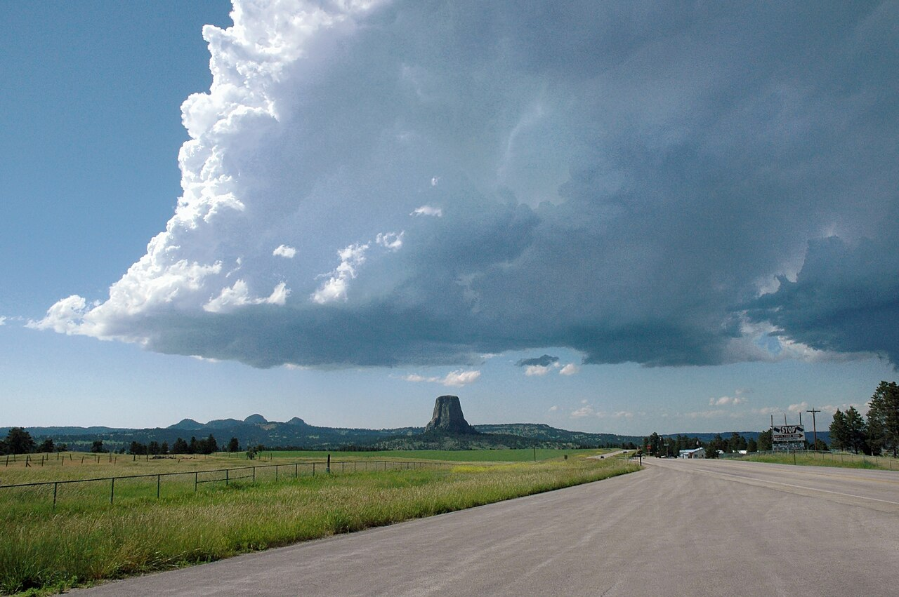

동기 유발
어제는 얇은 구름, 오늘은 솟구치는 구름
교과서 p. 92학습 목표
- 기온의 연직 분포와 대기 안정도의 관계를 설명할 수 있다.
- 단열 변화를 통해 구름·안개가 생성되는 과정과 강수 과정을 분석할 수 있다.

DimiTalen, CC0

NASA MODIS, 퍼블릭 도메인
구름은 날마다 두께도, 모양도, 떠 있는 높이도 다르다. 무엇이 이 차이를 만들까?
예시: 구름은 지표의 공기 덩어리가 올라가며 생기므로, 올라가는 공기 덩어리의 상태와 주위 공기의 기온 분포에 따라 모양과 높이가 달라진다. 교과서 운영안은 5차시(단열 변화·감률 2차시 / 대기 안정도 / 탐구 / 안개와 강수)입니다.
핵심 개념 1
단열 변화와 단열 감률
교과서 p. 92 ~ 94(1) 단열 팽창과 단열 압축
- 대기는 지표 근처에 많고 위로 갈수록 희박해, 높이 올라갈수록 기압이 낮다.
- 단열 팽창: 공기 덩어리가 상승하면 부피가 커지며, 분자 운동 에너지 일부가 팽창에 쓰여 온도가 내려간다.
- 단열 압축: 공기 덩어리가 하강하면 압축되어 온도가 올라간다.
- 단열 변화: 외부와 열을 주고받지 않고 부피 변화만으로 온도가 변하는 현상
(2) 건조 단열 감률 · 습윤 단열 감률 · 이슬점 감률
| 불포화 공기 (건조 단열 변화) | 포화 공기 (습윤 단열 변화) | |
|---|---|---|
| 기온 변화 | 1 km마다 약 10 °C | 1 km마다 약 5 °C (응결열이 냉각을 일부 상쇄) |
| 이슬점 변화 | 1 km마다 약 2 °C | 1 km마다 약 5 °C (기온과 같음) |
| 상대 습도 | 상승하면 증가 | 100%로 일정 |
- 상승 응결 고도: 상승하는 공기의 기온과 이슬점이 같아져 상대 습도 100%가 되고 구름이 생기기 시작하는 높이
H(km) = 18 (T − Td) T: 지표 공기의 기온, Td: 이슬점 · 기온은 10°C/km, 이슬점은 2°C/km씩 내려가 차이가 8°C/km씩 줄어든다
(3) 산을 넘는 바람: 푄과 높새바람
- 불포화 공기가 산을 만나 사면을 타고 오르면, 상승 응결 고도에서 구름이 생기고 정상까지 오르며 비나 눈이 내린다.
- 정상을 넘어 내려올 때는 건조 단열 변화로 데워진다. 그래서 산을 넘은 공기는 처음보다 기온이 높고 건조해진다. → 푄
- 우리나라에서는 동풍이 불 때 태백산맥을 넘어 영서 지방으로 부는 고온 건조한 바람이 있는데, 이를 높새바람이라고 한다.
시뮬레이션 1산을 넘는 공기 덩어리 따라가기
노란 공 = 불포화 공기, 파란 공 = 포화 공기(구름 속). 산을 넘기 전과 후의 기온·상대 습도를 비교하자. 상승 응결 고도가 산보다 높으면 어떻게 될까?
핵심 개념 2
대기 안정도와 구름의 생성
교과서 p. 95 ~ 96절대 안정 · 절대 불안정 · 조건부 불안정
- 대기 안정도: 공기 덩어리를 억지로 올리거나 내렸을 때, 원래 자리로 돌아가려는지 더 멀어지려는지의 경향. 공기 덩어리와 주위 공기의 온도를 비교해 판단한다.
- 올린 공기 덩어리가 주위보다 차가우면 다시 내려온다(안정). 따뜻하면 계속 올라간다(불안정).
| 상태 | 기온 감률 (Γ) | 특징 | 구름 |
|---|---|---|---|
| 절대 안정 | Γ < 습윤 단열 감률 | 포화 여부와 관계없이 원래 자리로 | 얇은 층운형 |
| 절대 불안정 | Γ > 건조 단열 감률 | 포화 여부와 관계없이 멀어짐 | 두꺼운 적운형 |
| 조건부 불안정 | 습윤 < Γ < 건조 | 불포화면 안정, 포화되면 불안정 | 층운형 → 적운형 |
- 조건부 불안정에서는 처음엔 억지로 올라가 상승 응결 고도에서 층운형 구름이 생기지만, 계속 올라가 주위보다 따뜻해지면 저절로 상승하며 적운형 구름이 발달한다.
시뮬레이션 2기온 감률을 바꾸면 어떤 구름이 생길까?
빨간 선(공기 덩어리)이 검은 선(주위 공기)보다 오른쪽이면 덩어리가 더 따뜻해 저절로 올라간다. 기온 감률 4, 8, 12 °C/km를 차례로 넣어 비교해 보자.
핵심 개념 3
안개의 생성과 강수 과정
교과서 p. 98 ~ 99(1) 안개
- 안개: 지표 근처에서 수증기가 응결한 작은 물방울이 공기 중에 떠 있는 것
복사 안개
바람 없고 맑은 날 밤, 지표의 복사 냉각으로 기온이 이슬점까지 내려가 생긴다.
이류 안개
따뜻하고 습한 공기가 차가운 지표나 바다 위로 이동하며 식어서 생긴다.
활승 안개
따뜻하고 습한 공기가 산 사면을 따라 오르며 단열 팽창으로 식어서 생긴다.
- 복사 안개와 이류 안개는 주로 대기가 안정할 때 지표 근처 공기가 냉각되어 생긴다.
(2) 강수 과정: 병합설과 빙정설
- 강수: 구름의 물방울이나 얼음 알갱이가 비·눈·우박 등으로 떨어지는 것. 구름 입자가 빗방울 크기로 자라야 한다.
- 병합설 (저위도, 여름철 중위도): 0 °C 이상인 구름이 주로 물방울로 이루어져 있다. 크기가 다른 물방울이 오르내리며 충돌·합체해 커지고, 무거워지면 떨어져 비가 된다.
- 빙정설 (고위도, 중위도): 구름의 −40~0 °C 층에 빙정과 과냉각 물방울이 함께 있다. 같은 온도에서 과냉각 물방울의 포화 수증기압이 빙정보다 높아, 물방울은 증발하고 그 수증기가 빙정에 붙어 빙정이 자란다. 떨어지면 눈, 도중에 녹으면 비가 된다.
시뮬레이션 3구름 속에서 빗방울이 자라는 과정
병합설: 큰 물방울(진한 파랑)이 떨어지며 작은 물방울을 삼키는 모습을 보자. 빙정설: 눈송이 모양 빙정이 자라는 동안 주변 물방울이 작아지는 모습을 보자. 크기와 속도는 과장했다.
탐구 활동
단열선도를 이용하여 대기 안정도 해석하기
교과서 p. 97탐구 · 두 지점의 기온 분포 비교
목표 높이에 따른 기온 분포와 단열선도를 이용해 대기 안정도를 해석할 수 있다. 준비물 색연필, 자
| 높이 (m) | 0 | 100 | 200 | 300 | 400 | 500 |
|---|---|---|---|---|---|---|
| (가) 기온 (°C) | 10.0 | 10.8 | 11.6 | 12.4 | 11.1 | 9.8 |
| (나) 기온 (°C) | 17.0 | 16.3 | 15.6 | 14.9 | 14.2 | 13.5 |
※ 수업용으로 새로 만든 예시 자료입니다. 교과서 탐구 표를 함께 분석해도 좋습니다.
- (가), (나)의 기온 분포를 단열선도에 서로 다른 색으로 그린다.
- 각 구간의 기울기를 건조 단열선·습윤 단열선과 비교해 안정도를 판단한다.
1. (가), (나) 지점의 대기 안정도를 높이에 따라 구분해 보자.
(가): 0~300 m는 위로 갈수록 기온이 높아지는 역전층으로 절대 안정, 300~500 m는 기온 감률이 1.3 °C/100 m로 건조 단열 감률보다 커 절대 불안정이다.
(나): 기온 감률이 0.7 °C/100 m로 두 단열 감률 사이이므로 조건부 불안정이다.
(나): 기온 감률이 0.7 °C/100 m로 두 단열 감률 사이이므로 조건부 불안정이다.
2. (가) 지점의 300 m 높이에서 주위와 온도가 같은 오염 물질이 나온다면 어느 쪽으로 퍼질까?
300 m 아래는 절대 안정이라 공기가 내려가기 어렵고, 위쪽은 절대 불안정이라 연직 운동이 활발하다. 따라서 오염 물질은 300 m보다 위쪽으로 퍼져 나갈 것이다.
시뮬레이션 4단열선도 위에 기온 분포 그리기
직접 그린 그래프와 비교해 보자. 각 구간의 기울기가 어느 단열선과 가까운지 살펴보면 된다.
스스로 확인하기
1. 기온 감률과 단열 감률로 대기 안정도를 판단하는 방법을 설명해 보자.
기온 감률이 습윤 단열 감률보다 작으면 절대 안정, 건조 단열 감률보다 크면 절대 불안정, 두 값 사이면 조건부 불안정이다.
2. 기온 25 °C, 이슬점 17 °C인 공기의 상승 응결 고도는?
H = (25 − 17)/8 = 1 km
형성 평가
개념 확인 문제
그림 출처
사진은 Wikimedia Commons의 CC0, NASA 퍼블릭 도메인 자료입니다. 탐구 자료와 시뮬레이션은 수업용으로 직접 만들었습니다.